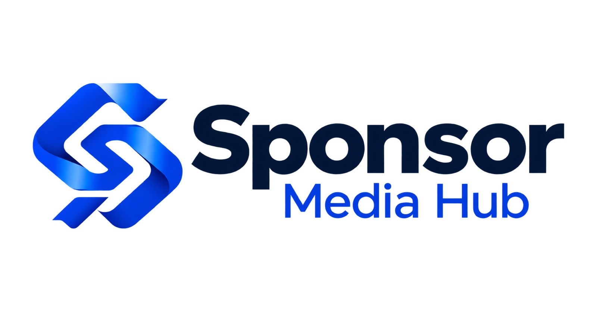
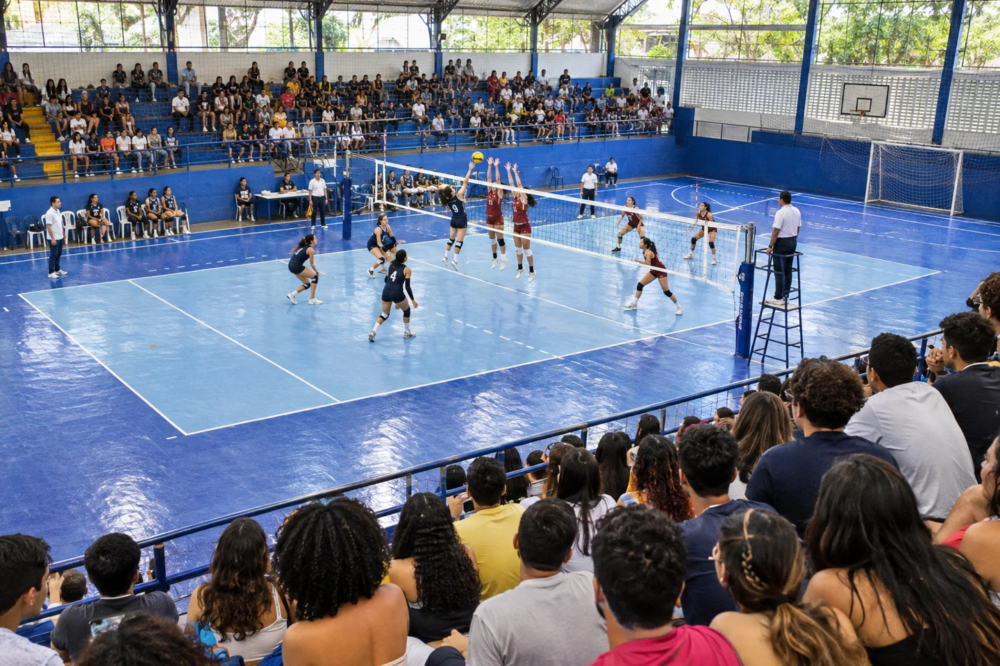

Para marcas
Defina o público, o objetivo e o que você quer medir em uma parceria esportiva.

Conectamos marcas a eventos esportivos alinhados ao público e aos objetivos da campanha.

A marca descreve o público que quer alcançar, a região, o orçamento e o prazo.
O organizador apresenta o evento, a audiência e as contrapartidas disponíveis.
As partes definem a ativação, os responsáveis e como comprovar o que foi entregue.
Exemplo ilustrativo
Uma marca quer apresentar seu produto a quem acompanha o torneio. A parceria reúne entregas antes, durante e depois do jogo.
Menção à marca em uma publicação do evento.
Área reservada para demonstração do produto ao público.
Ingressos para a marca receber seus convidados.
Fotos e links para comprovar as entregas acordadas.
Defina o público, o objetivo e o que você quer medir em uma parceria esportiva.
Organize os dados de audiência, os espaços de ativação e as entregas da sua cota.
O contato do projeto está em preparação.